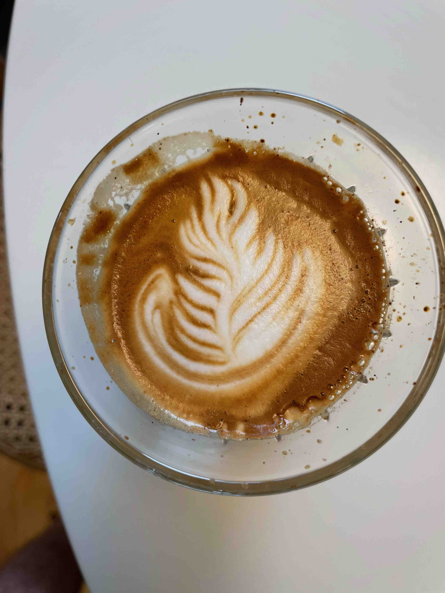

Austin's Latte Recipe

How to make the best home brewed latte ever:
This receipe may take some time to learn and acquire the
equipment for, but you will be brewing the best coffee
just like your favorite barista in no time.
Ingredients:
- 15 grams of fresh coffee beans.
- 250 ml of appropriate espresso grade water.
Preparation:
- Acquire expensive espresso machine.
- Buy very nice beans and weigh out 15 grams.
- Grind said beans using the world's fanciest grinder.
- Tamp grounds in portafilter using WDT tool and tamper.
- Attach portafilter to espresso machine and turn on.
- Brew for ~30 seconds or when weight of coffee is 30 grams.
- Steam milk until desired consistency met.
- Make latte art using steamed milk and foam.
- enjoy!
Back to Homepage